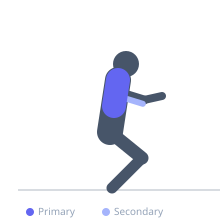
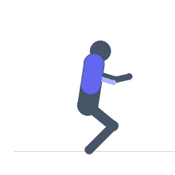

Exercise guide / Battle Ropes
Battle Ropes
Battle ropes are a conditioning exercise in which the athlete alternates or simultaneously waves heavy ropes anchored at one end, sustaining powerful arm and shoulder drive patterns for a timed interval. The continuous undulating motion of the ropes requires sustained explosive upper body work while the lower body is maintained in a stable athletic stance, creating high metabolic demand. Battle rope training is used for upper body power endurance, cardiovascular conditioning, and grip strength.
Primary muscles
deltoid anterior
trapezius upper
pectoralis major sternal
Secondary muscles
latissimus dorsi
triceps long head
Stabilizers
gluteus maximus
transverse abdominis
rectus femoris
Equipment
No Equipment (Bodyweight)


Starting position
- Stand facing the anchor point with feet shoulder-width apart in an athletic squat stance, one rope end in each hand. Slight hip hinge, slight knee bend.
Setup
- Anchor a heavy rope (38–50mm diameter) at a fixed point. Stand at a distance that keeps the rope slightly slack. Maintain a consistent athletic stance throughout.
Steps
- Step 1: Hold one rope end in each hand with an overhand grip.
- Step 2: Begin alternating waves: drive the right arm up and immediately bring it down while driving the left arm up.
- Step 3: Keep the waves large and continuous — the rope should form visible undulations moving toward the anchor.
- Step 4: Maintain an athletic stance throughout — do not let the torso collapse or the knees straighten.
- Step 5: Continue for the prescribed duration at maximum sustainable effort.
Coaching cues
- Athletic stance — stay low
- Big waves — full range
- Drive from the shoulder — not just the elbow
Breathing
- Breathe continuously at a rhythm matching the work rate. Do not hold breath.
Range of motion
- Large amplitude waves — full shoulder range. Rope must reach the anchor on each wave.
Tempo
- Typically performed for 20–40 second intervals with equal rest. 5–8 rounds.
Common mistakes
- Standing up too tall — the athletic stance with hips back keeps the core engaged
- Letting the waves die — maintain large, powerful waves throughout
- Only moving from the elbows — the motion should initiate from the shoulders
Safety
- High demand on the shoulders and forearms — adequate warm-up required.
- Build interval duration progressively — do not start at full intensity with long intervals.
Training
- endurance: 1–1 reps
- endurance: 5–8 sets
- Rest: {'endurance': 40}